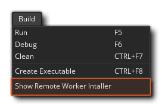
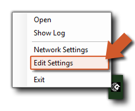

Wenn Sie Ihr Spiel kompilieren, verwenden Sie normalerweise den "Lokalen" Worker, also den Computer, auf dem GameMaker Studio 2 installiert wurde. Unter bestimmten Umständen müssen Sie jedoch möglicherweise einen anderen Computer verwenden, um Ihre Projekte zu erstellen. Wenn Sie beispielsweise an einem Mac arbeiten und ein Windows-Projekt erstellen möchten, sollten Sie einen Remote Worker konfigurieren und einen Windows-PC erstellen lassen. Wenn Sie einen Remote-Worker verwenden, sendet GameMaker Studio 2 im Wesentlichen alle erforderlichen Dateien von dem (lokalen) Rechner, auf dem er ausgeführt wird, an den Remote-Worker-Rechner und erstellt dann die endgültige ausführbare Datei für das Projekt es auf dem Remote-Computer, oder es an den lokalen Computer danach zurück). Bevor Sie jedoch diese Funktionalität nutzen können, müssen Sie bestimmte Tools auf dem Build-Rechner installiert und einige Einstellungen vorgenommen haben, die wir hier erklären werden.
Um einen Remote-Worker einzurichten, müssen Sie zunächst die Build-Tool-Anwendung Remote Worker auf dem zu verwendenden PC installieren. Sie finden dieses Tool, indem Sie in GameMaker Studio 2 auf dem lokalen Rechner zum Build Menu gehen und die Option "Remote Worker Installer anzeigen" auswählen: 
Alternativ können Sie im Target Manager auf das "Auge" -Symbol klicken und das Remote Worker-Installationsprogramm folgendermaßen aufrufen:
Der Installer wird so etwas wie " GameMakerStudio-Remote-Installer-X.X.X.XXX.exe "Und Sie müssen es kopieren über an den PC, die Sie als Remote - Arbeiter verwenden möchten (Sie brauchen nicht zu haben, GameMaker Studio 2 installiert auf dem Remote - Arbeiter, nur dieses Programm). Sobald Sie es auf den Build - PC kopiert haben Installieren Sie das Programm nach den Anweisungen auf dem Bildschirm und wenn das Installationsprogramm beendet ist, werden Sie möglicherweise vom Betriebssystem aufgefordert, über die Firewall auf Ihr Netzwerk zuzugreifen.Wenn Sie den Zugriff gewähren, öffnet das Installationsprogramm eine Seite in Ihrem Webbrowser und Sie Notieren Sie sich die auf dieser Seite angegebene IP-Adresse und Port-Nummer, da Sie sie für den nächsten Schritt benötigen.
Sie müssen nun zu dem Computer zurückkehren, auf dem GameMaker Studio 2 installiert ist, und auf die Schaltfläche Target Manager klicken
Öffnen Sie das Fenster "Target Manager", wechseln Sie zum Abschnitt " Worker " und klicken Sie auf die Schaltfläche " Add Worker"
. Dies öffnet dann das folgende Fenster:
Hier müssen Sie Ihrem Remote Worker einen Namen geben (dieser wird in der Worker-Liste im Target Manager angezeigt) und dann im Abschnitt Host Name die Adresse hinzufügen, die Sie zuvor vom Worker-Rechner angezeigt und notiert haben die Portnummer.
Wenn alles korrekt ausgeführt wurde, sollten Sie jetzt eine Meldung erhalten, dass Sie eine Verbindung zum Remote Worker-Computer herstellen können. Sobald Sie Ihren Remote Worker installiert und mit Ihrem Haupt-IDE-Computer verbunden haben, müssen Sie die lokalen Build-Einstellungen für jede Plattform vornehmen (siehe den folgenden Abschnitt für weitere Details), bevor Sie Ihr Projekt kompilieren können.
Die Einstellungsseite zeigt die verschiedenen Pfade und Build-Einstellungen für die Remote Worker-Anwendung. Am Anfang der Einstellungen haben Sie die verschiedenen Pfade, die von der Remote-Worker-Anwendung verwendet werden und bevor Sie irgendetwas anderes tun, sollten diese überarbeitet und bei Bedarf auf alternative Pfade gesetzt werden (im Allgemeinen sollten die Standardpfade jedoch in Ordnung sein). Sie können auf die Seite Remote Worker-Einstellungen mit einer der folgenden Methoden zugreifen:
- Klicken Sie oben auf der Seite Remote Worker, die im Browser Ihres Remotecomputers geöffnet wird, auf den Link "Einstellungen":
- Verwenden Sie den RMB auf dem Remote Worker Tray-Symbol, um die Einstellungen im Browser Ihres Remotecomputers zu öffnen: 
- Öffnen Sie auf Ihrem lokalen Computer den Zielmanager und klicken Sie auf das Zahnradsymbol
Nach oben öffnen Sie die Arbeitseinstellungen in einem Fenster auf Ihrem lokalen Computer:
Dadurch wird die Einstellungsseite angezeigt, auf der Sie die verschiedenen Optionen sehen und festlegen können, mit denen Sie die Pfade zum Erstellen Ihres Projekts festlegen können:
Nachdem Sie die Pfade für die Remote-Worker-Anwendung überprüft haben, können Sie (falls erforderlich) die verschiedenen lokalen Build-Einstellungen festlegen. Für verschiedene Plattformen müssen verschiedene Build-Tools auf dem Build-PC installiert sein, und der Remote-Mitarbeiter muss in der Lage sein, sie über die Seite "Einstellungen" für die Erstellung Ihrer Spiele zu verwenden. Die ersten Einstellungen hier sind die Allgemeinen Einstellungen:
Hier können Sie den Port für den Hilfeserver und den Port für den Debugger einrichten. Diese können geändert werden, wenn bei der Verwendung des Debug-Moduls Verbindungsprobleme auftreten, die jedoch im Allgemeinen auf ihren Standardwerten belassen werden sollten.
Sie können nun die verschiedenen Optionen für die Plattformen festlegen, für die der Remote Worker erstellen kann:
- Windows
Wenn Sie Zugriff auf die Windows-Zielplattform haben, sollten Sie in der Lage sein, mit dem Remote-Worker auf dem Windows-PC sofort die VM- Option zu verwenden. Wenn Sie jedoch den YYC verwenden möchten, müssen Sie auch den Pfad zu Visual Studio auf dem Build-PC festlegen. Ausführliche Informationen zum Einrichten eines Windows-PCs zum Kompilieren von Projekten finden Sie im folgenden Helpdesk-Artikel:
Sobald Sie Ihren Remote Worker eingerichtet und die lokalen Build-Einstellungen abgeschlossen haben (siehe den obigen Abschnitt), können Sie damit beginnen, Ihre Spiele zu kompilieren. Wählen Sie dazu den Remote Worker aus der Liste Target Manager aus, wählen Sie die zu testende / zu kompilierende Plattform sowie alle anderen Optionen (z. B. den Kompilierungstyp oder die Konfiguration) und drücken Sie dann Wiedergabe
oder Erstellen Sie ausführbare Datei
.
HINWEIS: Die verfügbaren Plattformen im Target Manager ändern sich je nach den Fähigkeiten des Remote Worker-Computers, und nicht alle Ziele sind verfügbar. Beachten Sie auch, dass es kein "Test" -Ziel für Remote Worker gibt.
Wenn Sie das Projekt einfach wiedergeben, kompiliert und führt der Remote Worker-Computer das Programm aus. Wenn Sie jedoch eine ausführbare Datei erstellen, kompiliert Remote Worker das Projekt und gibt dann a zurück *.zip Datei zum Speichern auf dem lokalen Computer speichern.Es sollte beachtet werden, dass weder die Schaltfläche Debuggen
noch die Schaltfläche "Reinigen" Wird verfügbar sein, wenn Sie einen Remote Worker verwenden. Beachten Sie außerdem, dass Sie derzeit nur jeweils einen Remote-Build ausführen können.


Sobald Sie den Remote Worker auf Ihrem Remote-Computer installiert und ausgeführt haben, wird er in der Taskleiste als Symbol angezeigt, und Sie können mit der rechten Maustaste darauf klicken, um die folgenden Optionen anzuzeigen: 
- Öffnen: Öffnen Sie die Anwendung "Remote Worker" in Ihrem Standardbrowser.
- Protokoll anzeigen: Öffnen Sie die Protokolldatei für den Remote Worker in Ihrem Browser.
- Netzwerkeinstellungen: Hier können Sie filtern, welche Maschinen Builds an den Remote Worker-Rechner senden sollen. Jeder Filter kann ein CIDR- Filter oder ein Hostname eines Rechners sein, der erlaubt ist. Sie sollten sich darüber im Klaren sein, dass Sie, wenn Sie mehrere Computer mit einem Remote-Mitarbeiter verbinden möchten oder wenn Sie Verbindungstypen mischen (z. B. verkabelt und WLAN), den IP-zulässigen Bereich hier möglicherweise bearbeiten müssen.
- Einstellungen bearbeiten: Öffnen Sie die Remote - Worker - Einstellungsmenü (erklärt in Abschnitt Einstellungen oben).
- Beenden: Beenden Sie die Remote Worker App. Dies bedeutet, dass Sie die App erst dann von einem lokalen Computer aus verbinden (oder kompilieren) können, wenn Sie die Remote Worker-App neu starten.